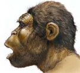

De: La Frikipedia, la enciclopedia extremadamente seria.
De: La Frikipedia, la enciclopedia extremadamente seria. De: La Frikipedia, la enciclopedia extremadamente seria.
| De la serie pueblos del mundo: | |||||
| Tordesillas | |||||
| |||||
| Topónimo oficial | Tordesillas | ||||
| País | España y olé | ||||
| Código postal | No les envíen cartas. Nadie sabe leer. | ||||
| Superficie | Plana, como el encefalograma de los habitantes. | ||||
| Altitud | Desgraciadamente, aún sobre el nivel del mar. | ||||
| Distancia | Nunca lo suficientemente lejos. | ||||
| Fundación | el primer Cromagnón lo fundó hace 2.000.000 de años | ||||
| Población | Endogámica y con mutaciones. | ||||
| Gentilicio | Muy gentiles no son que digamos. | ||||
| Alcalde | Vlad Tepes | ||||
Pueblo de Castilla y León donde se concentran la mayor cantidad de toricidas en activo del mundo. Cada 11 de septiembre se reúnen con gran algarabía demostrando cuán machos y valientes son asaeteando a un toro con lanzas como si fuera un pincho moruno. La lídia está bien equilibrada pues pueden llegar a participar 20.000 humanoides contra un sólo animal. La festividad en cuestión se llama "El toro de la Vega" y está dedicada a la Virgen quién según las últimas informaciones ha emigrado a Nueva Zelanda: Nunca se está lo suficientemente lejos de estos garrulos sanguinarios la Virgen "dixit".
La gracia de la fiesta está en hacer sufrir lo más posible al morlaco pues parece ser que esto acrecienta la virilidad del mozo y el que lo mata se lleva el premio, esto es: los testículos y el rabo con intención de ser injertado quirurjicamente en las ausentes partes del valiente y aguerrido tordellisano. Sin embargo, para demostrar su ecuanimidad, si el toro aguanta dos horas sin morir, se le perdona la vida. Curiosamente esto no ha ocurrido nunca.
La tradición se remonta a épocas cromañoides y se celebraba con bisontes, puesto que el toro de lidia no existía, y desde entonces no ha cambiado ni un ápice. Es más, los habitantes aún conservan rasgos primigenios de sus ancestros a excepción de los surcos que se forman en la frente y coronilla debido a una mutación genética que les permite la colocación de la boina a rosca. Sin embargo, debido al bajo coeficiente intelectual de la mayoría de los tordesillanos, proceden al enroscamiento con grandes dificultades y tras intensos y pormenorizados estudios de boinolología en la universidad de la localidad.
Hasta ahora no se ha podido hacer un examen antropológico de los habitantes de la villa pues el último antropólogo en intentar hacer un estudio de campo, el insigne profesor Archibald K. Gordon Higgins catedrático de la universidad de Oxford y autor de la celebrada tesis Análisis de la profundidad mental del toricida ibérico, fue empalado en la plaza del pueblo para regocijo y alborozo de sus moradores. Actualmente, la citada universidad busca nuevos voluntarios para esta investigación.
 Tordesillano medio
Autor(es):